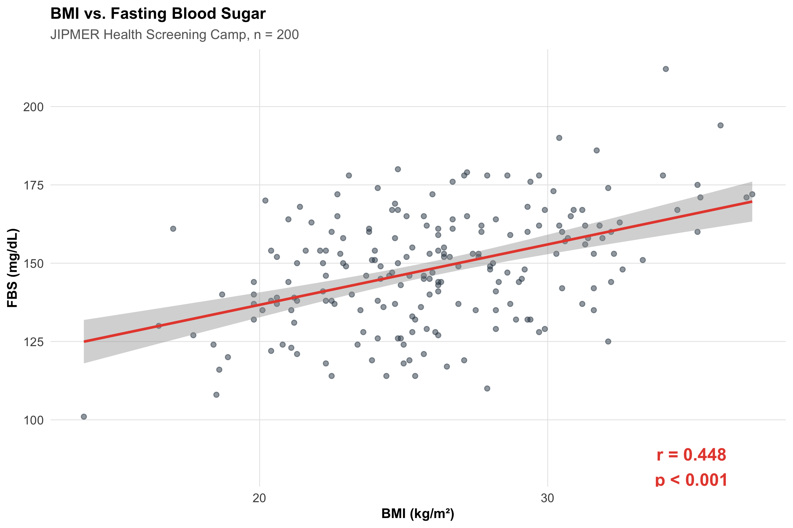
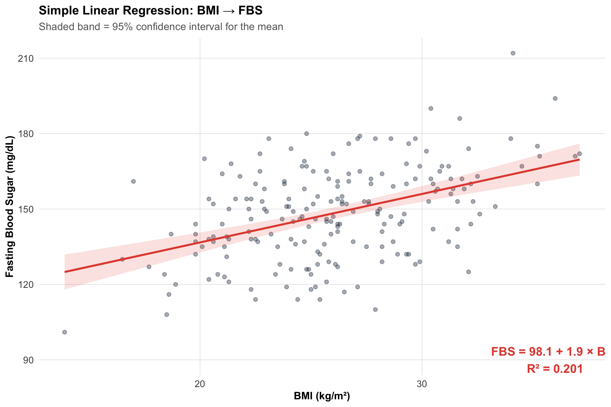
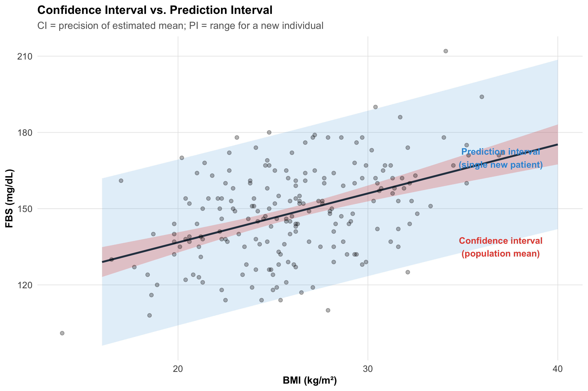
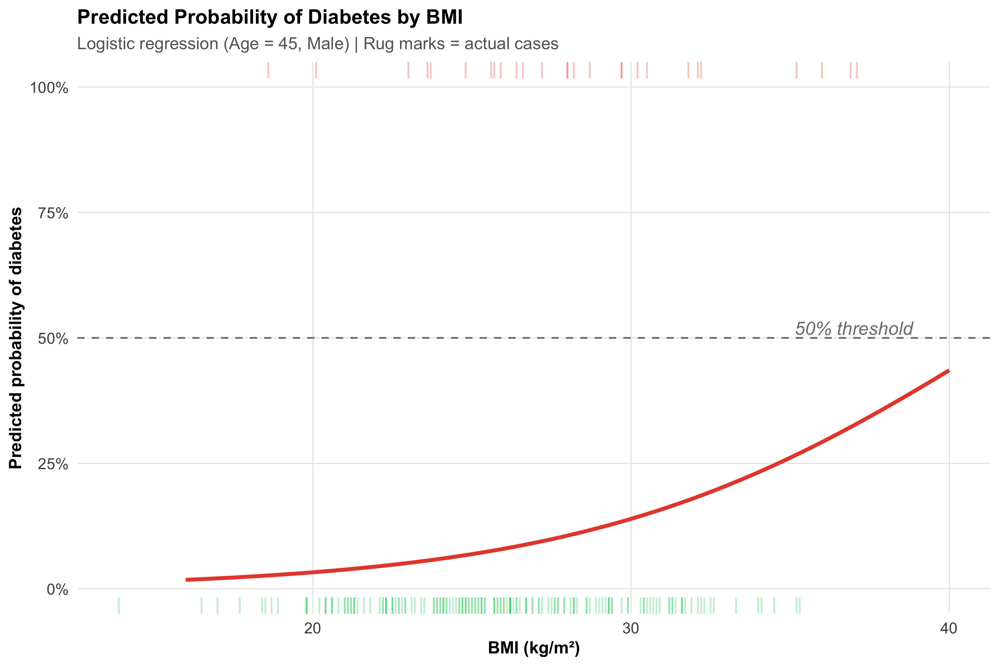

Navigate a decision framework for choosing the right regression model
12.2 Clinical Hook
A research team at JIPMER, Puducherry, is studying whether higher BMI is associated with higher fasting blood sugar (FBS) in 200 adults attending a health screening camp. They plot the data and see what looks like a positive trend. But the questions cascade:
How strong is the association? (Correlation)
Can we predict FBS from BMI? (Simple linear regression)
Does the association persist after adjusting for age and sex? (Multiple regression)
If the outcome were diabetes (yes/no) rather than FBS, what model should they use? (Logistic regression)
This module builds each tool in sequence.
12.3 Section 1: Correlation
1.1 What Correlation Measures
Correlation quantifies the strength and direction of the linear relationship between two continuous variables.
In words: As one variable goes up, does the other tend to go up (positive), go down (negative), or show no pattern (zero)?
Conceptually: r = average of the products of standardised deviations = Covariance(x, y) / (SD_x × SD_y).
Range: −1 (perfect negative) to +1 (perfect positive). r = 0 means no linear association.
1.2 Generating the Data
Code
# 200 adults at JIPMER health campn<-200age<-round(rnorm(n, mean =45, sd =12))bmi<-round(rnorm(n, mean =26, sd =4.5), 1)# FBS partly driven by BMI + age + noisefbs<-round(80+1.8*bmi+0.5*age+rnorm(n, sd =15))health<-data.frame( ID =1:n, Age =age, BMI =bmi, FBS =fbs, Sex =sample(c("Male", "Female"), n, replace =TRUE))cat("First 6 rows:\n")
r_bmi_fbs<-cor(health$BMI, health$FBS)cor_test<-cor.test(health$BMI, health$FBS)ggplot(health, aes(x =BMI, y =FBS))+geom_point(alpha =0.5, color ="#2c3e50")+geom_smooth(method ="lm", se =TRUE, color ="#e74c3c", linewidth =1)+annotate("text", x =35, y =85, label =paste0("r = ", round(r_bmi_fbs, 3),"\np < 0.001"), fontface ="bold", size =5, color ="#e74c3c")+labs(title ="BMI vs. Fasting Blood Sugar", subtitle ="JIPMER Health Screening Camp, n = 200", x ="BMI (kg/m²)", y ="FBS (mg/dL)")+theme_clean()

Interpretation: r = 0.448 — a moderate positive correlation. As BMI increases, FBS tends to increase. The p-value tests H₀: ρ = 0 (no linear association in the population).
Interpreting Correlation Strength
r
0.00 – 0.19
Negligible
0.20 – 0.39
Weak
0.40 – 0.59
Moderate
0.60 – 0.79
Strong
0.80 – 1.00
Very strong
These are rough guidelines — clinical context matters. A correlation of 0.3 between a biomarker and disease may be clinically important.
1.4 Spearman Rank Correlation
When the relationship is monotonic but not linear, or the data are ordinal, use Spearman’s rₛ (rank-based):
In summer months, ice cream sales and drowning deaths both rise. The correlation is strong (r ≈ 0.8). Should we ban ice cream?
No. The lurking variable is temperature — warm weather drives both.
Sources of spurious association include confounding (a third variable drives both), reverse causality (y causes x), selection bias (how the sample was chosen), and measurement error.
A strong r tells you the variables move together, not that one causes the other.
12.4 Section 2: Simple Linear Regression
2.1 The Model
We want to predict FBS from BMI. Simple linear regression fits the equation:
In words: Predicted outcome = Baseline level + (Rate of change × Predictor) + Random error
\[y = \beta_0 + \beta_1 x + \varepsilon\]
where:
\(\beta_0\) = intercept (predicted y when x = 0)
\(\beta_1\) = slope (change in y for each 1-unit increase in x)
\(\varepsilon\) = random error (what the model can’t explain)
The method of least squares finds \(\beta_0\) and \(\beta_1\) that minimise \(\sum (y_i - \hat{y}_i)^2\).
cat("For each 1 kg/m² increase in BMI, FBS increases by",round(b1, 2), "mg/dL on average.\n")
For each 1 kg/m² increase in BMI, FBS increases by 1.93 mg/dL on average.
Code
cat("95% CI for slope:", round(coefs$conf.low[2], 2),"to", round(coefs$conf.high[2], 2), "\n")
95% CI for slope: 1.39 to 2.47
Interpreting the Slope
The slope \(\beta_1\) = 1.93 means: for every additional 1 kg/m² of BMI, fasting blood sugar increases by about 1.9 mg/dL, holding nothing else constant.
The intercept \(\beta_0\) = 98.1 is the predicted FBS when BMI = 0 — biologically meaningless here, but mathematically necessary to position the line.
2.3 Visualising the Regression
Code
ggplot(health, aes(x =BMI, y =FBS))+geom_point(alpha =0.4, color ="#2c3e50")+geom_smooth(method ="lm", se =TRUE, color ="#e74c3c", fill ="#e74c3c", alpha =0.15, linewidth =1)+annotate("text", x =36, y =90, label =paste0("FBS = ", round(b0, 1), " + ",round(b1, 1), " × BMI\nR² = ",round(summary(model)$r.squared, 3)), fontface ="bold", color ="#e74c3c", size =4.5)+labs(title ="Simple Linear Regression: BMI → FBS", subtitle ="Shaded band = 95% confidence interval for the mean", x ="BMI (kg/m²)", y ="Fasting Blood Sugar (mg/dL)")+theme_clean()

2.4 R²: How Much Variance Is Explained?
In words: R² tells you what fraction of the total scatter in y is “explained” by the regression line.
cat("BMI explains", round(r_sq*100, 1), "% of the variation in FBS.\n")
BMI explains 20.1 % of the variation in FBS.
Code
cat("The remaining", round((1-r_sq)*100, 1),"% is due to age, diet, genetics, measurement error, etc.\n")
The remaining 79.9 % is due to age, diet, genetics, measurement error, etc.
What Is a ‘Good’ R²?
There is no universal threshold. In clinical prediction models, R² = 0.3–0.5 may be useful. In lab assays, R² > 0.95 is expected. Always ask: “Is this model useful for the clinical question?”
2.5 Confidence Interval vs. Prediction Interval
Code
new_data<-data.frame(BMI =seq(16, 40, by =0.5))ci_pred<-predict(model, newdata =new_data, interval ="confidence")pi_pred<-predict(model, newdata =new_data, interval ="prediction")plot_data<-data.frame( BMI =new_data$BMI, Fit =ci_pred[, "fit"], CI_lower =ci_pred[, "lwr"], CI_upper =ci_pred[, "upr"], PI_lower =pi_pred[, "lwr"], PI_upper =pi_pred[, "upr"])ggplot()+geom_ribbon(data =plot_data, aes(x =BMI, ymin =PI_lower, ymax =PI_upper), fill ="#3498db", alpha =0.15)+geom_ribbon(data =plot_data, aes(x =BMI, ymin =CI_lower, ymax =CI_upper), fill ="#e74c3c", alpha =0.25)+geom_line(data =plot_data, aes(x =BMI, y =Fit), color ="#2c3e50", linewidth =1)+geom_point(data =health, aes(x =BMI, y =FBS), alpha =0.3)+annotate("text", x =37, y =170, label ="Prediction interval\n(single new patient)", color ="#3498db", fontface ="bold", size =3.5)+annotate("text", x =37, y =135, label ="Confidence interval\n(population mean)", color ="#e74c3c", fontface ="bold", size =3.5)+labs(title ="Confidence Interval vs. Prediction Interval", subtitle ="CI = precision of estimated mean; PI = range for a new individual", x ="BMI (kg/m²)", y ="FBS (mg/dL)")+theme_clean()

CI vs. PI
Confidence interval (narrow, red): Where we expect the average FBS to lie for all people with a given BMI. It reflects uncertainty in the regression line itself.
Prediction interval (wide, blue): Where we expect a single new patient’s FBS to lie. It includes both line uncertainty and individual variation.
Clinical prediction models report PIs. Research papers typically report CIs.
12.5 Section 3: Regression Assumptions and Diagnostics
The four key assumptions (LINE):
Linearity — the relationship between x and y is linear
Independence — observations are independent
Normality — residuals are approximately normally distributed
Equal variance (homoscedasticity) — spread of residuals is constant across fitted values
Residuals vs. Fitted: Should be a random cloud. Patterns (curves, funnels) indicate non-linearity or heteroscedasticity.
Q-Q plot: Points should follow the diagonal. Deviations at the tails suggest non-normal residuals.
Scale-Location: Should show a roughly flat red line. An upward trend suggests increasing variance.
Residuals vs. Leverage: Points in the upper/lower right (high leverage, large residual) may be influential — check Cook’s distance > 0.5.
3.2 What to Do When Assumptions Fail
Problem
Detection
Solution
Non-linear relationship
Curved pattern in residuals vs. fitted
Transform x or y (log, sqrt); add polynomial term
Non-normal residuals
Deviation from diagonal on Q-Q plot
Transform y; use robust regression; often OK if n > 30
Heteroscedasticity (funnel shape)
Spread increases with fitted values
Transform y (log); use weighted least squares; robust SE
Influential outliers
Cook's distance > 0.5 or 1
Investigate data entry errors; report results with and without
12.6 Section 4: Multiple Regression
4.1 Why Adjust for Confounders?
In our JIPMER data, BMI and FBS are associated — but age also influences FBS. Is the BMI–FBS association genuine, or is it partly (or entirely) confounded by age?
Multiple regression lets us ask: “What is the effect of BMI on FBS, holding age and sex constant?”
In words: Each coefficient tells you the effect of that variable while all others are held fixed.
4.2 Fitting the Multiple Regression
Code
model_multi<-lm(FBS~BMI+Age+Sex, data =health)summary(model_multi)
Call:
lm(formula = FBS ~ BMI + Age + Sex, data = health)
Residuals:
Min 1Q Median 3Q Max
-39.198 -9.294 -0.238 9.588 46.001
Coefficients:
Estimate Std. Error t value Pr(>|t|)
(Intercept) 74.9954 8.3993 8.929 3.12e-16 ***
BMI 2.0149 0.2605 7.734 5.35e-13 ***
Age 0.4315 0.0951 4.537 9.92e-06 ***
SexMale 3.3145 2.2089 1.501 0.135
---
Signif. codes: 0 '***' 0.001 '**' 0.01 '*' 0.05 '.' 0.1 ' ' 1
Residual standard error: 15.61 on 196 degrees of freedom
Multiple R-squared: 0.2857, Adjusted R-squared: 0.2747
F-statistic: 26.13 on 3 and 196 DF, p-value: 2.917e-14
Code
coefs_simple<-tidy(model, conf.int =TRUE)coefs_multi<-tidy(model_multi, conf.int =TRUE)comparison<-tibble( Variable =c("BMI (simple)", "BMI (adjusted)"), Estimate =c(coefs_simple$estimate[2], coefs_multi$estimate[2]), `95% CI` =c(paste0(round(coefs_simple$conf.low[2], 2), " to ", round(coefs_simple$conf.high[2], 2)),paste0(round(coefs_multi$conf.low[2], 2), " to ", round(coefs_multi$conf.high[2], 2))), p =c(format(coefs_simple$p.value[2], digits =3),format(coefs_multi$p.value[2], digits =3)))kable(comparison, format ="html")%>%kable_styling(full_width =FALSE, bootstrap_options =c("bordered"))
Variable
Estimate
95% CI
p
BMI (simple)
1.928072
1.39 to 2.47
2.78e-11
BMI (adjusted)
2.014947
1.5 to 2.53
5.35e-13
Reading Multiple Regression Output
The BMI coefficient in the adjusted model tells you the effect of BMI independent of age and sex.
If the coefficient changes substantially after adjustment, confounding was present.
Adjusted R² penalises for the number of predictors and is more honest than raw R² for comparing models.
4.3 Adjusted R² and Model Comparison
Code
cat("Simple model R²:", round(summary(model)$r.squared, 4),"| Adj R²:", round(summary(model)$adj.r.squared, 4), "\n")
Simple model R²: 0.201 | Adj R²: 0.197
Code
cat("Multiple model R²:", round(summary(model_multi)$r.squared, 4),"| Adj R²:", round(summary(model_multi)$adj.r.squared, 4), "\n")
Multiple model R²: 0.2857 | Adj R²: 0.2747
Code
cat("\nAdding age and sex explains an additional",round((summary(model_multi)$r.squared-summary(model)$r.squared)*100, 1),"% of FBS variance.\n")
Adding age and sex explains an additional 8.5 % of FBS variance.
Overfitting
Adding more predictors always increases R² — even if the new variables are noise. Adjusted R² corrects for this. If adjusted R² drops when you add a variable, that variable is not improving the model.
12.7 Section 5: Logistic Regression
5.1 When the Outcome Is Binary
What if the research question is: “Does higher BMI predict diabetes (yes/no)?”
FBS is continuous — but diabetes status is binary. Linear regression can’t model binary outcomes properly (it predicts values outside 0–1). We need logistic regression.
In words: Logistic regression models the log-odds of the outcome:
where \(p\) = probability of the event (diabetes = yes).
The odds ratio for a 1-unit increase in x is:
\[OR = e^{\beta_1}\]
5.2 Generating Binary Outcome Data
Code
# Create diabetes outcome (higher BMI and age → higher probability)health$diabetes_prob<-plogis(-8+0.15*health$BMI+0.05*health$Age)health$Diabetes<-rbinom(n, 1, health$diabetes_prob)health$Diabetes_label<-ifelse(health$Diabetes==1, "Diabetic", "Non-diabetic")cat("Diabetes prevalence:", round(mean(health$Diabetes)*100, 1), "%\n")
Diabetes prevalence: 13.5 %
5.3 Fitting the Logistic Regression
Code
logit_model<-glm(Diabetes~BMI+Age+Sex, data =health, family =binomial)summary(logit_model)
Call:
glm(formula = Diabetes ~ BMI + Age + Sex, family = binomial,
data = health)
Coefficients:
Estimate Std. Error z value Pr(>|z|)
(Intercept) -7.88632 1.78488 -4.418 9.94e-06 ***
BMI 0.15608 0.05142 3.035 0.0024 **
Age 0.04543 0.02000 2.271 0.0232 *
SexMale -0.66062 0.44725 -1.477 0.1397
---
Signif. codes: 0 '***' 0.001 '**' 0.01 '*' 0.05 '.' 0.1 ' ' 1
(Dispersion parameter for binomial family taken to be 1)
Null deviance: 158.31 on 199 degrees of freedom
Residual deviance: 141.55 on 196 degrees of freedom
AIC: 149.55
Number of Fisher Scoring iterations: 5
Code
logit_coefs<-tidy(logit_model, conf.int =TRUE, exponentiate =TRUE)or_table<-logit_coefs%>%filter(term!="(Intercept)")%>%select(Variable =term, OR =estimate, CI_low =conf.low, CI_high =conf.high, p =p.value)%>%mutate(across(c(OR, CI_low, CI_high), ~round(., 3)), p =format(p, digits =3))kable(or_table, col.names =c("Variable", "OR", "95% CI Lower", "95% CI Upper", "p-value"), format ="html")%>%kable_styling(full_width =FALSE, bootstrap_options =c("bordered", "hover"))
Variable
OR
95% CI Lower
95% CI Upper
p-value
BMI
1.169
1.060
1.299
0.0024
Age
1.046
1.007
1.090
0.0232
SexMale
0.517
0.208
1.220
0.1397
Interpreting Logistic Regression ORs
OR for BMI: For each 1 kg/m² increase in BMI, the odds of diabetes change by a factor of 1.17 (holding age and sex constant).
OR > 1: Higher BMI increases the odds of diabetes.
OR < 1: The variable is protective.
95% CI excluding 1.0: Statistically significant.
This connects directly to the Odds Ratio from Module 10 — logistic regression is the multivariable extension of the 2×2 table OR.
5.4 Predicted Probabilities
Code
bmi_seq<-data.frame(BMI =seq(16, 40, by =0.5), Age =45, Sex ="Male")bmi_seq$pred_prob<-predict(logit_model, newdata =bmi_seq, type ="response")ggplot(bmi_seq, aes(x =BMI, y =pred_prob))+geom_line(color ="#e74c3c", linewidth =1.2)+geom_rug(data =health%>%filter(Diabetes==1), aes(x =BMI, y =NULL), sides ="t", alpha =0.3, color ="#e74c3c")+geom_rug(data =health%>%filter(Diabetes==0), aes(x =BMI, y =NULL), sides ="b", alpha =0.3, color ="#2ecc71")+geom_hline(yintercept =0.5, linetype ="dashed", color ="gray50")+annotate("text", x =37, y =0.52, label ="50% threshold", color ="gray50", fontface ="italic")+scale_y_continuous(labels =percent_format(), limits =c(0, 1))+labs(title ="Predicted Probability of Diabetes by BMI", subtitle ="Logistic regression (Age = 45, Male) | Rug marks = actual cases", x ="BMI (kg/m²)", y ="Predicted probability of diabetes")+theme_clean()

The S-shaped (sigmoid) curve is the hallmark of logistic regression. The probability is bounded between 0 and 1 — unlike linear regression, which would predict impossible values.
12.8 Section 6: The Correlation–Causation–Regression Framework
Correlation → Regression → Causation?
Tool
What it tells you
What it does NOT tell you
Correlation (r)
Strength and direction of linear association
Whether x causes y
Simple regression
How y changes per unit of x; prediction
Whether the relationship is causal
Multiple regression
Effect of x adjusted for confounders
Whether all confounders are measured
Logistic regression
OR for binary outcomes, adjusted
Causation without proper study design
Regression adjusts for measured confounders — but unmeasured confounders can still bias results. Only a well-designed RCT (Module 7) can establish causation. Regression in observational data provides adjusted associations, not proof of causation.
12.9 Section 7: Decision Framework
Scenario
Method
Output
Two continuous variables — strength of association?
Pearson correlation (r)
r, p-value, 95% CI
Ordinal data or outliers present?
Spearman rank correlation (rₛ)
rₛ, p-value
Predict continuous outcome from one predictor?
Simple linear regression
Slope, R², equation, CI/PI
Predict continuous outcome, adjust for confounders?
Multiple linear regression
Adjusted slopes, adjusted R²
Predict binary outcome (yes/no)?
Logistic regression
Odds ratios, predicted probabilities
Predict time-to-event (survival)?
Cox regression (Module 12)
Hazard ratios
12.10 Summary
Key Takeaways
Pearson r measures linear association (−1 to +1). Spearman rₛ is the rank-based alternative for ordinal or skewed data.
Correlation ≠ causation. Confounding, reverse causality, and selection bias can create spurious associations.
Simple linear regression fits y = β₀ + β₁x. The slope is the change in y per 1-unit increase in x. R² = fraction of variance explained.
Always check LINE assumptions — linearity, independence, normality of residuals, equal variance. Use diagnostic plots.
Confidence intervals (for the mean) are narrower than prediction intervals (for a new individual). Always report uncertainty.
Multiple regression adjusts for confounders: “effect of x₁ holding x₂, x₃, … constant.” Use adjusted R² for model comparison.
Logistic regression models binary outcomes. Coefficients exponentiate to odds ratios — connecting directly to Module 10.
No regression model proves causation in observational data. Regression adjusts for measured confounders; RCTs are needed for causal claims.
12.11 Practice Questions
Q1: Correlation vs Causation
A study finds r = 0.85 between hours of TV watched per day and BMI in 500 adults. Which interpretation is MOST appropriate?
✘ A. Watching more TV causes weight gain — Incorrect. Correlation does not establish causation — confounders like sedentary lifestyle, diet, and socioeconomic status may explain the association.
✔ B. There is a strong positive linear association between TV hours and BMI — Correct! r = 0.85 indicates a strong positive linear association. We cannot infer causation from correlation alone.
✘ C. 85% of the variation in BMI is explained by TV watching — Incorrect. R² (not r) gives the proportion of variance explained. R² = 0.85² = 0.72, meaning 72% — but this still doesn’t prove causation.
✘ D. The relationship is statistically significant but clinically irrelevant — Incorrect. r = 0.85 is both statistically and practically strong. Clinical relevance cannot be dismissed without context.
Q2: Regression Prediction
A regression model gives: SBP = 90 + 0.6 × Age (years). For a 60-year-old patient, what is the predicted systolic BP?
✘ A. 90 mmHg — Incorrect. That is the intercept only — you need to add the age contribution: 0.6 × 60 = 36.
✘ C. 150 mmHg — Incorrect. Check the arithmetic: 90 + (0.6 × 60) = 126, not 150.
✘ D. 36 mmHg — Incorrect. 36 is the age contribution (0.6 × 60), but you must add the intercept (90).
Q3: R-Squared Interpretation
In a simple linear regression, R² = 0.64. Which statement is correct?
✘ A. The correlation coefficient r = 0.64 — Incorrect. R² = r², so r = √0.64 = 0.80 (assuming positive association).
✔ B. The predictor explains 64% of the variation in the outcome — Correct! R² = 0.64 means 64% of outcome variance is explained by the model. The remaining 36% is unexplained.
✘ C. The model correctly classifies 64% of observations — Incorrect. R² is not a classification metric — it measures proportion of variance explained.
✘ D. The slope of the regression line is 0.64 — Incorrect. R² and the slope are different quantities. The slope depends on the units of x and y.
Q4: Logistic Regression OR
A logistic regression for diabetes (yes/no) gives OR = 1.12 (95% CI: 1.04–1.21) for BMI. What is the correct interpretation?
✘ A. For each 1 kg/m² increase in BMI, the probability of diabetes increases by 12% — Incorrect. OR is not the same as probability increase. The OR says the odds multiply by 1.12 per unit BMI increase.
✔ B. For each 1 kg/m² increase in BMI, the odds of diabetes increase by 12%, and this is statistically significant — Correct! OR = 1.12 means the odds multiply by 1.12 per unit BMI increase (12% increase). The CI excludes 1.0, so p < 0.05.
✘ C. BMI causes diabetes with 12% certainty — Incorrect. An OR does not express certainty of causation. It quantifies the association between BMI and odds of diabetes.
✘ D. The model explains 12% of the variance in diabetes — Incorrect. OR is not R². The 1.12 refers to the odds ratio per unit change in the predictor.
Q5: Regression Assumptions
Which of the following is NOT an assumption of simple linear regression?
✘ A. Linearity of the relationship between x and y — Incorrect — this IS a required assumption (the L in LINE).
✘ B. Independence of observations — Incorrect — this IS a required assumption (the I in LINE).
✔ C. The predictor variable x must be normally distributed — Correct! Regression assumes normality of residuals, not of x. The predictor can have any distribution.
✘ D. Homoscedasticity (constant variance of residuals) — Incorrect — this IS a required assumption (the E in LINE).
Q6: Confounding in Multiple Regression
A multiple regression shows that the association between BMI and FBS drops from β = 2.1 (simple) to β = 1.4 (after adjusting for age and sex). What does this suggest?
✘ A. The original association was entirely spurious — Incorrect. The adjusted coefficient is still 1.4 and presumably still significant — the association remains, just weaker.
✘ B. Age and sex are mediators in the causal pathway — Incorrect. Without a causal diagram, we cannot distinguish confounding from mediation based on coefficient change alone.
✔ C. Age and/or sex were confounders — they partly explained the BMI–FBS association — Correct! The coefficient dropped by ~33% after adjustment, suggesting age/sex confounded part (but not all) of the association.
✘ D. The multiple regression model is invalid — Incorrect. A coefficient change after adjustment is expected and informative — it means confounding was present and has been partially addressed.
12.12 Appendix: R Functions Quick Reference
Code
# ======================================# QUICK R REFERENCE — CORRELATION & REGRESSION# ======================================# Pearson correlationcor(x, y)cor.test(x, y)# with p-value and 95% CI# Spearman correlationcor(x, y, method ="spearman")# Simple linear regressionmodel<-lm(y~x, data =df)summary(model)# coefficients, R², p-valuesconfint(model)# 95% CI for coefficientspredict(model, newdata, interval ="confidence")# CI for meanpredict(model, newdata, interval ="prediction")# PI for individual# Diagnostic plotspar(mfrow =c(2,2)); plot(model)# Multiple regressionmodel_multi<-lm(y~x1+x2+x3, data =df)summary(model_multi)# Logistic regressionlogit<-glm(y~x1+x2, data =df, family =binomial)summary(logit)exp(coef(logit))# odds ratiosexp(confint(logit))# 95% CI for ORspredict(logit, type ="response")# predicted probabilities# Compare modelsanova(model_simple, model_multi)AIC(model_simple, model_multi)
---title: "Correlation and Regression"subtitle: "From Measuring Association to Predicting Outcomes"description: | Quantify relationships between continuous variables using Pearson and Spearman correlation. Build simple linear regression models, check assumptions, and interpret R². Extend to multiple regression for confounding adjustment and logistic regression for binary outcomes. Indian clinical examples throughout.categories: - Biostatistics - Correlation - Regression - Linear Models - Logistic Regressionauthor: "AIIMS Bhopal Biostatistics Course"date: "`r Sys.Date()`"---```{r}#| label: setup#| include: falselibrary(tidyverse)library(kableExtra)source("../R/mcq.R")library(patchwork)library(scales)library(broom)set.seed(42)theme_clean <-function() {theme_minimal(base_size =12) +theme(plot.title =element_text(face ="bold", size =13),plot.subtitle =element_text(size =11, color ="gray40"),panel.grid.minor =element_blank(),panel.grid.major =element_line(color ="gray90", linewidth =0.3),axis.text =element_text(size =10),axis.title =element_text(size =11, face ="bold"),legend.position ="bottom",legend.title =element_text(face ="bold") )}```::: {.callout-note appearance="minimal"}**Lecture slides for this module:** [Open Slides](../slides/11-correlation-regression-slides.html){target="_blank"}:::## Learning Objectives {#learning-objectives}By the end of this module, you will be able to:1. **Calculate and interpret** Pearson and Spearman correlation coefficients2. **Distinguish** correlation from causation and identify lurking variables3. **Fit and interpret** a simple linear regression model (slope, intercept, R²)4. **Check regression assumptions** using residual plots and respond to violations5. **Explain** confidence intervals vs. prediction intervals for regression6. **Understand multiple regression** as a tool for confounding adjustment7. **Interpret logistic regression** output (odds ratios, predicted probabilities) for binary outcomes8. **Navigate a decision framework** for choosing the right regression model---## Clinical HookA research team at JIPMER, Puducherry, is studying whether higher BMI is associated with higher fasting blood sugar (FBS) in 200 adults attending a health screening camp. They plot the data and see what looks like a positive trend. But the questions cascade:1. **How strong** is the association? (Correlation)2. **Can we predict** FBS from BMI? (Simple linear regression)3. **Does the association persist** after adjusting for age and sex? (Multiple regression)4. If the outcome were diabetes (yes/no) rather than FBS, **what model should they use?** (Logistic regression)This module builds each tool in sequence.---## Section 1: Correlation### 1.1 What Correlation MeasuresCorrelation quantifies the **strength and direction** of the *linear* relationship between two continuous variables.**In words:** As one variable goes up, does the other tend to go up (positive), go down (negative), or show no pattern (zero)?$$r = \frac{\sum (x_i - \bar{x})(y_i - \bar{y})}{\sqrt{\sum (x_i - \bar{x})^2 \cdot \sum (y_i - \bar{y})^2}}$$**Conceptually:** r = average of the products of standardised deviations = Covariance(x, y) / (SD_x × SD_y).Range: −1 (perfect negative) to +1 (perfect positive). r = 0 means no *linear* association.---### 1.2 Generating the Data```{r}#| label: generate-data#| echo: true# 200 adults at JIPMER health campn <-200age <-round(rnorm(n, mean =45, sd =12))bmi <-round(rnorm(n, mean =26, sd =4.5), 1)# FBS partly driven by BMI + age + noisefbs <-round(80+1.8* bmi +0.5* age +rnorm(n, sd =15))health <-data.frame(ID =1:n, Age = age, BMI = bmi, FBS = fbs,Sex =sample(c("Male", "Female"), n, replace =TRUE))cat("First 6 rows:\n")head(health)```---### 1.3 Pearson Correlation: Worked Example```{r}#| label: pearson-scatter#| echo: true#| fig-width: 9#| fig-height: 6r_bmi_fbs <-cor(health$BMI, health$FBS)cor_test <-cor.test(health$BMI, health$FBS)ggplot(health, aes(x = BMI, y = FBS)) +geom_point(alpha =0.5, color ="#2c3e50") +geom_smooth(method ="lm", se =TRUE, color ="#e74c3c", linewidth =1) +annotate("text", x =35, y =85,label =paste0("r = ", round(r_bmi_fbs, 3),"\np < 0.001"),fontface ="bold", size =5, color ="#e74c3c") +labs(title ="BMI vs. Fasting Blood Sugar",subtitle ="JIPMER Health Screening Camp, n = 200",x ="BMI (kg/m²)", y ="FBS (mg/dL)") +theme_clean()```**Interpretation:** r = `r round(r_bmi_fbs, 3)` — a moderate positive correlation. As BMI increases, FBS tends to increase. The p-value tests H₀: ρ = 0 (no linear association in the population).:::{.callout-note title="Interpreting Correlation Strength"}||r|| Interpretation ||------|---------------|| 0.00 – 0.19 | Negligible || 0.20 – 0.39 | Weak || 0.40 – 0.59 | Moderate || 0.60 – 0.79 | Strong || 0.80 – 1.00 | Very strong |These are rough guidelines — clinical context matters. A correlation of 0.3 between a biomarker and disease may be clinically important.:::---### 1.4 Spearman Rank CorrelationWhen the relationship is **monotonic but not linear**, or the data are **ordinal**, use Spearman's rₛ (rank-based):```{r}#| label: spearman-example#| echo: true# Severity score (ordinal 1-5) vs. hospital LOSseverity <-sample(1:5, 60, replace =TRUE, prob =c(0.15, 0.25, 0.3, 0.2, 0.1))los <- severity *2+rpois(60, lambda =3) +round(rexp(60, rate =0.3))rs <-cor(severity, los, method ="spearman")cat("Spearman rₛ =", round(rs, 3), "\n")```:::{.callout-tip title="Pearson vs. Spearman"}| Feature | Pearson (r) | Spearman (rₛ) ||---------|------------|---------------|| Relationship type | Linear | Monotonic (any shape) || Data type | Continuous, roughly normal | Ordinal or skewed continuous || Sensitive to outliers? | Yes — a single outlier can flip r | No — works on ranks || When to use | Both variables continuous, linear scatter | Ordinal data, skewed, or outliers present |:::---### 1.5 Correlation ≠ Causation:::{.callout-warning title="The Ice-Cream-Drowning Fallacy"}In summer months, ice cream sales and drowning deaths both rise. The correlation is strong (r ≈ 0.8). Should we ban ice cream?**No.** The lurking variable is **temperature** — warm weather drives both.Sources of spurious association include confounding (a third variable drives both), reverse causality (y causes x), selection bias (how the sample was chosen), and measurement error.A strong r tells you the variables *move together*, not that one *causes* the other.:::---## Section 2: Simple Linear Regression### 2.1 The ModelWe want to **predict** FBS from BMI. Simple linear regression fits the equation:**In words:** Predicted outcome = Baseline level + (Rate of change × Predictor) + Random error$$y = \beta_0 + \beta_1 x + \varepsilon$$where:- $\beta_0$ = **intercept** (predicted y when x = 0)- $\beta_1$ = **slope** (change in y for each 1-unit increase in x)- $\varepsilon$ = random error (what the model can't explain)The method of **least squares** finds $\beta_0$ and $\beta_1$ that minimise $\sum (y_i - \hat{y}_i)^2$.---### 2.2 Fitting the Model in R```{r}#| label: fit-regression#| echo: truemodel <-lm(FBS ~ BMI, data = health)summary(model)``````{r}#| label: extract-coefs#| echo: truecoefs <-tidy(model, conf.int =TRUE)b0 <- coefs$estimate[1]b1 <- coefs$estimate[2]cat("Regression equation:\n")cat("FBS =", round(b0, 2), "+", round(b1, 2), "× BMI\n")cat("\nInterpretation:\n")cat("For each 1 kg/m² increase in BMI, FBS increases by",round(b1, 2), "mg/dL on average.\n")cat("95% CI for slope:", round(coefs$conf.low[2], 2),"to", round(coefs$conf.high[2], 2), "\n")```:::{.callout-note title="Interpreting the Slope"}The slope $\beta_1$ = `r round(b1, 2)` means: **for every additional 1 kg/m² of BMI, fasting blood sugar increases by about `r round(b1, 1)` mg/dL**, holding nothing else constant.The intercept $\beta_0$ = `r round(b0, 1)` is the predicted FBS when BMI = 0 — biologically meaningless here, but mathematically necessary to position the line.:::---### 2.3 Visualising the Regression```{r}#| label: regression-plot#| echo: true#| fig-width: 9#| fig-height: 6ggplot(health, aes(x = BMI, y = FBS)) +geom_point(alpha =0.4, color ="#2c3e50") +geom_smooth(method ="lm", se =TRUE, color ="#e74c3c", fill ="#e74c3c",alpha =0.15, linewidth =1) +annotate("text", x =36, y =90,label =paste0("FBS = ", round(b0, 1), " + ",round(b1, 1), " × BMI\nR² = ",round(summary(model)$r.squared, 3)),fontface ="bold", color ="#e74c3c", size =4.5) +labs(title ="Simple Linear Regression: BMI → FBS",subtitle ="Shaded band = 95% confidence interval for the mean",x ="BMI (kg/m²)", y ="Fasting Blood Sugar (mg/dL)") +theme_clean()```---### 2.4 R²: How Much Variance Is Explained?**In words:** R² tells you what fraction of the total scatter in y is "explained" by the regression line.$$R^2 = 1 - \frac{\text{Residual SS}}{\text{Total SS}} = 1 - \frac{\sum(y_i - \hat{y}_i)^2}{\sum(y_i - \bar{y})^2}$$For simple regression, $R^2 = r^2$ (the square of the Pearson correlation).```{r}#| label: r-squared#| echo: truer_sq <-summary(model)$r.squaredcat("R² =", round(r_sq, 4), "\n")cat("BMI explains", round(r_sq *100, 1), "% of the variation in FBS.\n")cat("The remaining", round((1- r_sq) *100, 1),"% is due to age, diet, genetics, measurement error, etc.\n")```:::{.callout-tip title="What Is a 'Good' R²?"}There is no universal threshold. In clinical prediction models, R² = 0.3–0.5 may be useful. In lab assays, R² > 0.95 is expected. Always ask: "Is this model useful for the clinical question?":::---### 2.5 Confidence Interval vs. Prediction Interval```{r}#| label: ci-vs-pi#| echo: true#| fig-width: 9#| fig-height: 6new_data <-data.frame(BMI =seq(16, 40, by =0.5))ci_pred <-predict(model, newdata = new_data, interval ="confidence")pi_pred <-predict(model, newdata = new_data, interval ="prediction")plot_data <-data.frame(BMI = new_data$BMI,Fit = ci_pred[, "fit"],CI_lower = ci_pred[, "lwr"], CI_upper = ci_pred[, "upr"],PI_lower = pi_pred[, "lwr"], PI_upper = pi_pred[, "upr"])ggplot() +geom_ribbon(data = plot_data, aes(x = BMI, ymin = PI_lower, ymax = PI_upper),fill ="#3498db", alpha =0.15) +geom_ribbon(data = plot_data, aes(x = BMI, ymin = CI_lower, ymax = CI_upper),fill ="#e74c3c", alpha =0.25) +geom_line(data = plot_data, aes(x = BMI, y = Fit), color ="#2c3e50",linewidth =1) +geom_point(data = health, aes(x = BMI, y = FBS), alpha =0.3) +annotate("text", x =37, y =170, label ="Prediction interval\n(single new patient)",color ="#3498db", fontface ="bold", size =3.5) +annotate("text", x =37, y =135, label ="Confidence interval\n(population mean)",color ="#e74c3c", fontface ="bold", size =3.5) +labs(title ="Confidence Interval vs. Prediction Interval",subtitle ="CI = precision of estimated mean; PI = range for a new individual",x ="BMI (kg/m²)", y ="FBS (mg/dL)") +theme_clean()```:::{.callout-note title="CI vs. PI"}- **Confidence interval** (narrow, red): Where we expect the *average* FBS to lie for all people with a given BMI. It reflects uncertainty in the *regression line itself*.- **Prediction interval** (wide, blue): Where we expect a *single new patient's* FBS to lie. It includes both line uncertainty *and* individual variation.Clinical prediction models report PIs. Research papers typically report CIs.:::---## Section 3: Regression Assumptions and DiagnosticsThe four key assumptions (**LINE**):1. **L**inearity — the relationship between x and y is linear2. **I**ndependence — observations are independent3. **N**ormality — residuals are approximately normally distributed4. **E**qual variance (homoscedasticity) — spread of residuals is constant across fitted values### 3.1 Diagnostic Plots```{r}#| label: diagnostic-plots#| echo: true#| fig-width: 10#| fig-height: 8par(mfrow =c(2, 2))plot(model)```**How to read these:**- **Residuals vs. Fitted:** Should be a random cloud. Patterns (curves, funnels) indicate non-linearity or heteroscedasticity.- **Q-Q plot:** Points should follow the diagonal. Deviations at the tails suggest non-normal residuals.- **Scale-Location:** Should show a roughly flat red line. An upward trend suggests increasing variance.- **Residuals vs. Leverage:** Points in the upper/lower right (high leverage, large residual) may be influential — check Cook's distance > 0.5.---### 3.2 What to Do When Assumptions Fail```{r}#| label: assumptions-table#| echo: falseassumptions_df <-tibble(Problem =c("Non-linear relationship","Non-normal residuals","Heteroscedasticity (funnel shape)","Influential outliers"),Detection =c("Curved pattern in residuals vs. fitted","Deviation from diagonal on Q-Q plot","Spread increases with fitted values","Cook's distance > 0.5 or 1"),Solution =c("Transform x or y (log, sqrt); add polynomial term","Transform y; use robust regression; often OK if n > 30","Transform y (log); use weighted least squares; robust SE","Investigate data entry errors; report results with and without"))kable(assumptions_df, format ="html") %>%kable_styling(full_width =TRUE, bootstrap_options =c("bordered", "hover")) %>%row_spec(0, bold =TRUE, background ="#1e3a5f", color ="white") %>%column_spec(1, bold =TRUE)```---## Section 4: Multiple Regression### 4.1 Why Adjust for Confounders?In our JIPMER data, BMI and FBS are associated — but **age** also influences FBS. Is the BMI–FBS association genuine, or is it partly (or entirely) confounded by age?**Multiple regression** lets us ask: *"What is the effect of BMI on FBS, holding age and sex constant?"*$$\text{FBS} = \beta_0 + \beta_1 \times \text{BMI} + \beta_2 \times \text{Age} + \beta_3 \times \text{Sex} + \varepsilon$$**In words:** Each coefficient tells you the effect of that variable *while all others are held fixed*.---### 4.2 Fitting the Multiple Regression```{r}#| label: multiple-regression#| echo: truemodel_multi <-lm(FBS ~ BMI + Age + Sex, data = health)summary(model_multi)``````{r}#| label: compare-models#| echo: truecoefs_simple <-tidy(model, conf.int =TRUE)coefs_multi <-tidy(model_multi, conf.int =TRUE)comparison <-tibble(Variable =c("BMI (simple)", "BMI (adjusted)"),Estimate =c(coefs_simple$estimate[2], coefs_multi$estimate[2]),`95% CI`=c(paste0(round(coefs_simple$conf.low[2], 2), " to ", round(coefs_simple$conf.high[2], 2)),paste0(round(coefs_multi$conf.low[2], 2), " to ", round(coefs_multi$conf.high[2], 2)) ),p =c(format(coefs_simple$p.value[2], digits =3),format(coefs_multi$p.value[2], digits =3)))kable(comparison, format ="html") %>%kable_styling(full_width =FALSE, bootstrap_options =c("bordered"))```:::{.callout-tip title="Reading Multiple Regression Output"}- The BMI coefficient in the adjusted model tells you the effect of BMI *independent of* age and sex.- If the coefficient changes substantially after adjustment, **confounding was present**.- **Adjusted R²** penalises for the number of predictors and is more honest than raw R² for comparing models.:::---### 4.3 Adjusted R² and Model Comparison```{r}#| label: adjusted-r2#| echo: truecat("Simple model R²:", round(summary(model)$r.squared, 4),"| Adj R²:", round(summary(model)$adj.r.squared, 4), "\n")cat("Multiple model R²:", round(summary(model_multi)$r.squared, 4),"| Adj R²:", round(summary(model_multi)$adj.r.squared, 4), "\n")cat("\nAdding age and sex explains an additional",round((summary(model_multi)$r.squared -summary(model)$r.squared) *100, 1),"% of FBS variance.\n")```:::{.callout-warning title="Overfitting"}Adding more predictors always increases R² — even if the new variables are noise. **Adjusted R²** corrects for this. If adjusted R² drops when you add a variable, that variable is not improving the model.:::---## Section 5: Logistic Regression### 5.1 When the Outcome Is BinaryWhat if the research question is: *"Does higher BMI predict diabetes (yes/no)?"*FBS is continuous — but diabetes status is **binary**. Linear regression can't model binary outcomes properly (it predicts values outside 0–1). We need **logistic regression**.**In words:** Logistic regression models the **log-odds** of the outcome:$$\ln\left(\frac{p}{1-p}\right) = \beta_0 + \beta_1 x$$where $p$ = probability of the event (diabetes = yes).The **odds ratio** for a 1-unit increase in x is:$$OR = e^{\beta_1}$$---### 5.2 Generating Binary Outcome Data```{r}#| label: logistic-data#| echo: true# Create diabetes outcome (higher BMI and age → higher probability)health$diabetes_prob <-plogis(-8+0.15* health$BMI +0.05* health$Age)health$Diabetes <-rbinom(n, 1, health$diabetes_prob)health$Diabetes_label <-ifelse(health$Diabetes ==1, "Diabetic", "Non-diabetic")cat("Diabetes prevalence:", round(mean(health$Diabetes) *100, 1), "%\n")```---### 5.3 Fitting the Logistic Regression```{r}#| label: logistic-fit#| echo: truelogit_model <-glm(Diabetes ~ BMI + Age + Sex, data = health, family = binomial)summary(logit_model)``````{r}#| label: logistic-or#| echo: truelogit_coefs <-tidy(logit_model, conf.int =TRUE, exponentiate =TRUE)or_table <- logit_coefs %>%filter(term !="(Intercept)") %>%select(Variable = term, OR = estimate, CI_low = conf.low, CI_high = conf.high,p = p.value) %>%mutate(across(c(OR, CI_low, CI_high), ~round(., 3)),p =format(p, digits =3))kable(or_table, col.names =c("Variable", "OR", "95% CI Lower", "95% CI Upper", "p-value"),format ="html") %>%kable_styling(full_width =FALSE, bootstrap_options =c("bordered", "hover"))```:::{.callout-note title="Interpreting Logistic Regression ORs"}- **OR for BMI:** For each 1 kg/m² increase in BMI, the odds of diabetes change by a factor of `r round(logit_coefs$estimate[logit_coefs$term == "BMI"], 2)` (holding age and sex constant).- **OR > 1:** Higher BMI increases the odds of diabetes.- **OR < 1:** The variable is protective.- **95% CI excluding 1.0:** Statistically significant.This connects directly to the Odds Ratio from Module 10 — logistic regression is the **multivariable extension** of the 2×2 table OR.:::---### 5.4 Predicted Probabilities```{r}#| label: predicted-probs#| echo: true#| fig-width: 9#| fig-height: 6bmi_seq <-data.frame(BMI =seq(16, 40, by =0.5), Age =45, Sex ="Male")bmi_seq$pred_prob <-predict(logit_model, newdata = bmi_seq, type ="response")ggplot(bmi_seq, aes(x = BMI, y = pred_prob)) +geom_line(color ="#e74c3c", linewidth =1.2) +geom_rug(data = health %>%filter(Diabetes ==1), aes(x = BMI, y =NULL),sides ="t", alpha =0.3, color ="#e74c3c") +geom_rug(data = health %>%filter(Diabetes ==0), aes(x = BMI, y =NULL),sides ="b", alpha =0.3, color ="#2ecc71") +geom_hline(yintercept =0.5, linetype ="dashed", color ="gray50") +annotate("text", x =37, y =0.52, label ="50% threshold",color ="gray50", fontface ="italic") +scale_y_continuous(labels =percent_format(), limits =c(0, 1)) +labs(title ="Predicted Probability of Diabetes by BMI",subtitle ="Logistic regression (Age = 45, Male) | Rug marks = actual cases",x ="BMI (kg/m²)", y ="Predicted probability of diabetes") +theme_clean()```The S-shaped (sigmoid) curve is the hallmark of logistic regression. The probability is bounded between 0 and 1 — unlike linear regression, which would predict impossible values.---## Section 6: The Correlation–Causation–Regression Framework:::{.callout-important title="Correlation → Regression → Causation?"}| Tool | What it tells you | What it does NOT tell you ||------|-------------------|--------------------------|| Correlation (r) | Strength and direction of linear association | Whether x causes y || Simple regression | How y changes per unit of x; prediction | Whether the relationship is causal || Multiple regression | Effect of x *adjusted for confounders* | Whether all confounders are measured || Logistic regression | OR for binary outcomes, adjusted | Causation without proper study design |**Regression adjusts for measured confounders** — but unmeasured confounders can still bias results. Only a well-designed **RCT** (Module 7) can establish causation. Regression in observational data provides *adjusted associations*, not proof of causation.:::---## Section 7: Decision Framework```{r}#| label: decision-table#| echo: falsedecision <-tibble(Scenario =c("Two continuous variables — strength of association?","Ordinal data or outliers present?","Predict continuous outcome from one predictor?","Predict continuous outcome, adjust for confounders?","Predict binary outcome (yes/no)?","Predict time-to-event (survival)?" ),Method =c("Pearson correlation (r)","Spearman rank correlation (rₛ)","Simple linear regression","Multiple linear regression","Logistic regression","Cox regression (Module 12)" ),Output =c("r, p-value, 95% CI","rₛ, p-value","Slope, R², equation, CI/PI","Adjusted slopes, adjusted R²","Odds ratios, predicted probabilities","Hazard ratios" ))kable(decision, format ="html") %>%kable_styling(full_width =TRUE, bootstrap_options =c("bordered", "hover")) %>%row_spec(0, bold =TRUE, background ="#1e3a5f", color ="white") %>%column_spec(1, bold =TRUE, width ="40%")```---## Summary:::{.callout-tip title="Key Takeaways"}1. **Pearson r** measures linear association (−1 to +1). **Spearman rₛ** is the rank-based alternative for ordinal or skewed data.2. **Correlation ≠ causation.** Confounding, reverse causality, and selection bias can create spurious associations.3. **Simple linear regression** fits y = β₀ + β₁x. The slope is the change in y per 1-unit increase in x. R² = fraction of variance explained.4. **Always check LINE assumptions** — linearity, independence, normality of residuals, equal variance. Use diagnostic plots.5. **Confidence intervals** (for the mean) are narrower than **prediction intervals** (for a new individual). Always report uncertainty.6. **Multiple regression** adjusts for confounders: "effect of x₁ holding x₂, x₃, ... constant." Use adjusted R² for model comparison.7. **Logistic regression** models binary outcomes. Coefficients exponentiate to **odds ratios** — connecting directly to Module 10.8. **No regression model proves causation** in observational data. Regression adjusts for *measured* confounders; RCTs are needed for causal claims.:::---## Practice Questions### Q1: Correlation vs Causation```{r}#| label: mcq1#| echo: false#| results: asismake_mcq("m11q1","A study finds r = 0.85 between hours of TV watched per day and BMI in 500 adults. Which interpretation is MOST appropriate?",c("Watching more TV causes weight gain"="Incorrect. Correlation does not establish causation — confounders like sedentary lifestyle, diet, and socioeconomic status may explain the association.","answer:There is a strong positive linear association between TV hours and BMI"="Correct! r = 0.85 indicates a strong positive linear association. We cannot infer causation from correlation alone.","85% of the variation in BMI is explained by TV watching"="Incorrect. R² (not r) gives the proportion of variance explained. R² = 0.85² = 0.72, meaning 72% — but this still doesn't prove causation.","The relationship is statistically significant but clinically irrelevant"="Incorrect. r = 0.85 is both statistically and practically strong. Clinical relevance cannot be dismissed without context." ))```---### Q2: Regression Prediction```{r}#| label: mcq2#| echo: false#| results: asismake_mcq("m11q2","A regression model gives: SBP = 90 + 0.6 × Age (years). For a 60-year-old patient, what is the predicted systolic BP?",c("90 mmHg"="Incorrect. That is the intercept only — you need to add the age contribution: 0.6 × 60 = 36.","answer:126 mmHg"="Correct! SBP = 90 + 0.6 × 60 = 90 + 36 = 126 mmHg.","150 mmHg"="Incorrect. Check the arithmetic: 90 + (0.6 × 60) = 126, not 150.","36 mmHg"="Incorrect. 36 is the age contribution (0.6 × 60), but you must add the intercept (90)." ))```---### Q3: R-Squared Interpretation```{r}#| label: mcq3#| echo: false#| results: asismake_mcq("m11q3","In a simple linear regression, R² = 0.64. Which statement is correct?",c("The correlation coefficient r = 0.64"="Incorrect. R² = r², so r = √0.64 = 0.80 (assuming positive association).","answer:The predictor explains 64% of the variation in the outcome"="Correct! R² = 0.64 means 64% of outcome variance is explained by the model. The remaining 36% is unexplained.","The model correctly classifies 64% of observations"="Incorrect. R² is not a classification metric — it measures proportion of variance explained.","The slope of the regression line is 0.64"="Incorrect. R² and the slope are different quantities. The slope depends on the units of x and y." ))```---### Q4: Logistic Regression OR```{r}#| label: mcq4#| echo: false#| results: asismake_mcq("m11q4","A logistic regression for diabetes (yes/no) gives OR = 1.12 (95% CI: 1.04–1.21) for BMI. What is the correct interpretation?",c("For each 1 kg/m² increase in BMI, the probability of diabetes increases by 12%"="Incorrect. OR is not the same as probability increase. The OR says the odds multiply by 1.12 per unit BMI increase.","answer:For each 1 kg/m² increase in BMI, the odds of diabetes increase by 12%, and this is statistically significant"="Correct! OR = 1.12 means the odds multiply by 1.12 per unit BMI increase (12% increase). The CI excludes 1.0, so p < 0.05.","BMI causes diabetes with 12% certainty"="Incorrect. An OR does not express certainty of causation. It quantifies the association between BMI and odds of diabetes.","The model explains 12% of the variance in diabetes"="Incorrect. OR is not R². The 1.12 refers to the odds ratio per unit change in the predictor." ))```---### Q5: Regression Assumptions```{r}#| label: mcq5#| echo: false#| results: asismake_mcq("m11q5","Which of the following is NOT an assumption of simple linear regression?",c("Linearity of the relationship between x and y"="Incorrect — this IS a required assumption (the L in LINE).","Independence of observations"="Incorrect — this IS a required assumption (the I in LINE).","answer:The predictor variable x must be normally distributed"="Correct! Regression assumes normality of *residuals*, not of x. The predictor can have any distribution.","Homoscedasticity (constant variance of residuals)"="Incorrect — this IS a required assumption (the E in LINE)." ))```---### Q6: Confounding in Multiple Regression```{r}#| label: mcq6#| echo: false#| results: asismake_mcq("m11q6","A multiple regression shows that the association between BMI and FBS drops from β = 2.1 (simple) to β = 1.4 (after adjusting for age and sex). What does this suggest?",c("The original association was entirely spurious"="Incorrect. The adjusted coefficient is still 1.4 and presumably still significant — the association remains, just weaker.","Age and sex are mediators in the causal pathway"="Incorrect. Without a causal diagram, we cannot distinguish confounding from mediation based on coefficient change alone.","answer:Age and/or sex were confounders — they partly explained the BMI–FBS association"="Correct! The coefficient dropped by ~33% after adjustment, suggesting age/sex confounded part (but not all) of the association.","The multiple regression model is invalid"="Incorrect. A coefficient change after adjustment is expected and informative — it means confounding was present and has been partially addressed." ))```---## Appendix: R Functions Quick Reference```{r}#| label: appendix#| echo: true#| eval: false# ======================================# QUICK R REFERENCE — CORRELATION & REGRESSION# ======================================# Pearson correlationcor(x, y)cor.test(x, y) # with p-value and 95% CI# Spearman correlationcor(x, y, method ="spearman")# Simple linear regressionmodel <-lm(y ~ x, data = df)summary(model) # coefficients, R², p-valuesconfint(model) # 95% CI for coefficientspredict(model, newdata, interval ="confidence") # CI for meanpredict(model, newdata, interval ="prediction") # PI for individual# Diagnostic plotspar(mfrow =c(2,2)); plot(model)# Multiple regressionmodel_multi <-lm(y ~ x1 + x2 + x3, data = df)summary(model_multi)# Logistic regressionlogit <-glm(y ~ x1 + x2, data = df, family = binomial)summary(logit)exp(coef(logit)) # odds ratiosexp(confint(logit)) # 95% CI for ORspredict(logit, type ="response") # predicted probabilities# Compare modelsanova(model_simple, model_multi)AIC(model_simple, model_multi)```---**End of Module 11***AIIMS Bhopal Biostatistics Course | Updated: `r Sys.Date()`*